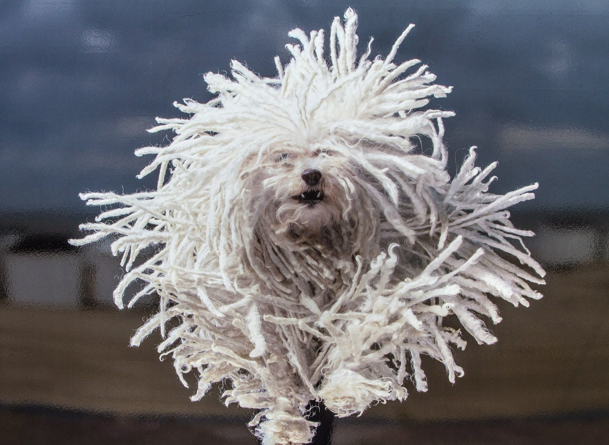
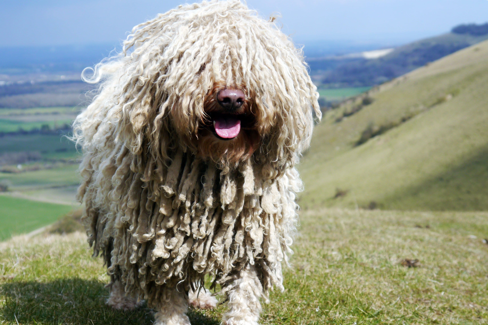
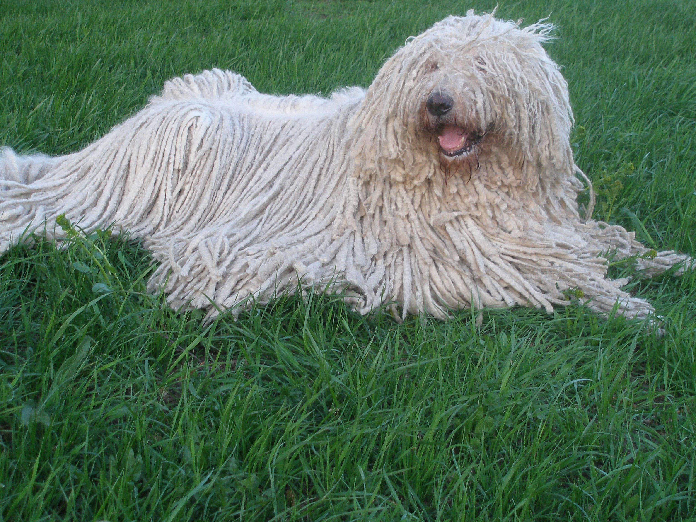

Komondor

origin
Hungary
size
Large
color
White
type
Purebred
breed group
Working (AKC:1937), Guardian Dogs (UKC)
character
Best guard
temperament
Affectionate, Calm, Fearless, Gentle, Independent, Steady
height
25.5 inches (65 cm)
weight
125 pounds (59 kg)
geography
Europe
overview
The Jämthund is a large, rectangular spitz breed, clean cut, strong, substantial and agile. It must not give the impression of having a long body or of being overly heavy in body, as it is a breed known for great endurance. Courageous and energetic, but also stoically calm.
As with most breeds developed for hunting, the Jämthund requires a lot of regular exercise to stay fit, both physically and mentally. It quickly becomes bored if kept indoors for too long and can become destructive.
history
The Jämthund is a breed with ancient origins, though it was only recognized as a separate breed in 1946, because it used to be shown together with the smaller Norwegian Elkhound. The breed was mainly used for hunting Elk, though it was sometimes used on bear and lynx as well.
Photo Gallery


